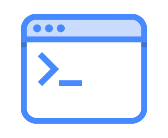
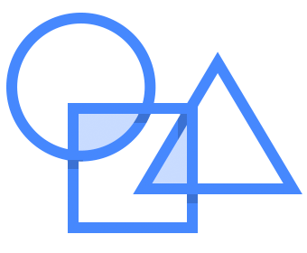
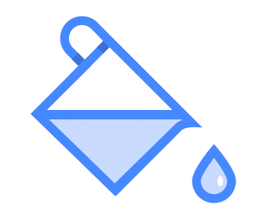

Ionic Framework
Desarrollo Rápido de Aplicaciones Móviles

Ionic Framework
Ionic Framework es un SDK de código abierto que permite a los desarrolladores crear aplicaciones móviles de alta calidad utilizando tecnologías web familiares (HTML, CSS y JavaScript).
Free and Open Source
Ionic es totalmente gratuito y de código abierto, lanzado bajo la licencia permisiva MIT, lo que significa que puede utilizar Ionic en proyectos personales o comerciales de forma gratuita. Por ejemplo, MIT es la misma licencia utilizada por proyectos tan populares como jQuery y Ruby on Rails.
Command Line Interface
Ionic CLI es una herramienta que proporciona una serie de comandos útiles para los desarrolladores de Ionic.
Además de instalar y actualizar Ionic, viene con un servidor de desarrollo incorporado, herramientas de compilación y depuración, y mucho más.
Requerimientos

Node.js® es un entorno de ejecución para JavaScript construido con el motor de JavaScript V8 de Chrome. El ecosistema de paquetes de Node.js, npm, es el ecosistema mas grande de librerías de código abierto en el mundo.


Instalación
#instalar localmente
npm install ionic
#instalar localmente desde un paquete
npm install carpeta/donde/copie/ionic
#instalar globalmente
npm install -g ionic
#instalar globalmente (super usuario)
sudo npm install -g ionic
#comprobar version de ionic
ionic --version
Comandos
# crear un nuevo proyecto (interactivo)
ionic start miapp
# crear un nuevo proyecto definiendo plantilla
ionic start miapp tabs
# listar las plantillas disponibles
ionic start --list
# ver todas las opciones disponibles
ionic start --help
Comandos
# desplegar localmente en el navegador
ionic serve
# desplegar para probar compatibilidad en plataformas
ionic serve --lab
# ver todas las opciones disponibles
ionic serve --help
Componentes

Los componentes en Ionic son elementos de interfaz de usuario reutilizables que sirven como bloques de construcción para tu aplicación para dispositivos móviles. Los componentes están formados por HTML, CSS y a veces JavaScript. Cada componente Ionic se adapta a la plataforma en la que se ejecuta la aplicación.
Temas
Son conjuntos de estilos que se aplican a una aplicación. Además de theming, la continuidad de la plataforma de Ionic permite que los componentes tengan estilos específicos de la plataforma. Esto significa que los estilos de la aplicación cambiarán en función de la plataforma (iOS, Android, etc.) en la que se está ejecutando, ofreciendo a sus usuarios una experiencia con la que están familiarizados.
API
Las API de componentes incluyen clases como Checkbox, Toggle o Item y le muestran cómo usarlas, además de listar sus selectores, propiedades disponibles y eventos.
Las API de servicio son clases como MenuController, Config o Platform. Estos son los servicios proporcionados por Ionic que se pueden inyectar en sus clases.
Programación